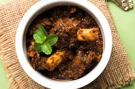

Bhuna Gosht

Description
Bhunna Gosht is a delicious Pakistani Beef Curry that's made with tomatoes
and a handful of spices. It’s traditionally made with mutton and is
commonly known as mutton bhunna too. Beef Curry is served with naan, roti
or rice, with a side of Kachumber Salad.
Ingredients
- 500 grams cubed beef
- 2 tablespoons oil
- 2 medium tomatoes
- 1 medium onion
- 1 teaspoon red kashmiri chilli powder
- 1/2 teaspoon turmeric powder
- 1 tablespoon ginger garlic paste
- Salt to taste
- 3/4 cup water
- 1 green chilli
- 1/4 cup chopped coriander
Instructions
-
Place all ingredients (except green chilli and coriander) into a
pressure cooker.
-
Place the lid onto the pressure cooker, and cook until the whistle
starts blowing for about 3-4 minutes. Timing may vary a little bit,
depending on the quality of your beef.
-
Remove the lid, and place the pressure cooker onto the stove and cook
the beef (also add the green chilli at this point) on medium high heat
until most of the water evaporates and a masala forms.
-
The trick to making bhunna gosht is making sure that you cook enough so
that the oil separates from the curry. This happens when the oil is
visible on top of the bhunna gosht.
- Top with chopped coriander.
- Serve immediately.
Nutrition
Calories: 259kcal | Carbohydrates: 5g | Protein: 21g | Fat: 17g |
Saturated Fat: 5g | Cholesterol: 72mg | Sodium: 96mg | Potassium: 484mg |
Fiber: 1g | Sugar: 3g | Vitamin A: 410IU | Vitamin C: 9mg | Calcium: 33mg
| Iron: 2mg